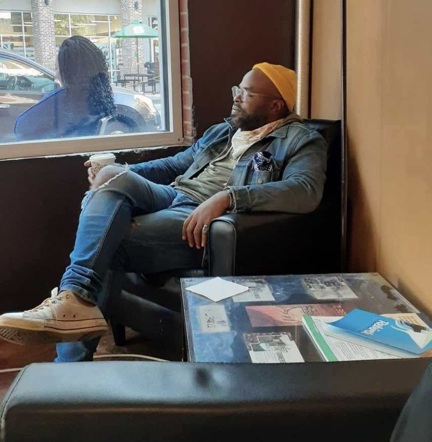

Artist Statement & Bio

For Los Angeles native and Atlanta-based self-taught artist Sarnaa Archie, his gift of expression presented early in life. By the time he was 10, he exhibited in museums and galleries in Japan, New York, and California, winning many awards. Ever the observer, Sarnaa (/sar-nay/) found inspiration in art that was an expression of things more felt than seen: the primitive style drawings of Keith Haring, the colorful explorative cubism of Picasso, the illustrative style of Geoff McFetridge, the socially critical pop-art stylings of Andy Warhol, and the round and flat illustrative style of Ub Iwerks, popularized by Walt Disney. However, Jean Michele Basquiat was arguably, most influential, since, after watching a dramatization of the artists brief life, young Sarnaa came to fear the spiral of drug abuse that consumed Basquiat. Practical beyond his years, he veered far away from the pursuit of anything that felt like being an artist.
By age 17, Sarnaa sold a software business, became a tech investor, and was a lecturer at the University of Georgia, setting himself up to spend the next decade as an enterpriser and humanitarian whose interests and passions took him around the world. No matter how neatly this career he built fit into the world’s expectations around him, there was a void within that no open-air office could fill and that he could no longer ignore. In 2019, Sarnaa accepted that his continued, deliberate, and focused practice in art—visual, written, and auditory—were the best way to fulfill his intellectual curiosity and sense of meaning and purpose. Through his art he builds a context for meaningful conversation.
His work is informed by readings in western and eastern philosophy, broad studies in history, visual depictions of Black People in early American and contemporary art and media—with a particular focus on “Black Americana.” Though his subjects and themes differ from piece to piece, their focus tends toward broad socio-philosophical ideas of identity, humanity, and individual conscious and subconscious focus.
In his large ink on paper works, the deep-black India ink concurrently defines, reveals, and redefines a quilt of images, informed by the deep black lines, creating visual and cognitive dissonance. When the viewer changes her focus from the black to the white spaces (or vice-versa), an alternative conceptual world reveals itself within the same visual plane. Yet in his smaller ink on paper works he plays on words and images by juxtaposing known objects with seemingly unrelated words. The thematic interrelationships deepen and broaden, causing the viewer to reconsider any definitive conclusion about the composition’s theme and broadens our conception of definition itself.
In contrast to these black and white pieces are the artist’s digital drawings, where depth of field takes over, focused on a principle subject, usually portraying an imagined stereotype or caricature of a concept. In these works, color, form, and content contrast and color block to create tension, causing the viewer to question or second guess the dissonance in their visceral and articulated sense of pleasure, confusion, terror, or whatever emotions the images conjure. At that moment, the viewer, moved to reckon with a collision of contradiction, comes face to face with the many things that we are.
Throughout Sarnaa’s work, the common thread is the artist’s interest in the potential of dissonance and objectivity to resolve internal conflict in the hope that it creates wholeness in himself and his audience.